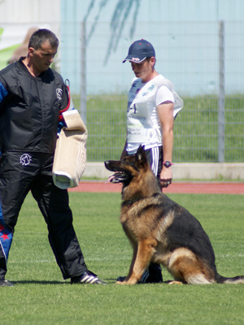

News Archives : 2012 : Prof. Erin O'Shea's Zambo Keeps On Winning
by Cathryn Delude
August 22, 2012
Last year, we wrote about MCB Professor Erin O'Shea’s championship dog, Zambo, and his victory at the Universal Sieger World Championships in Austria where he received the world’s highest possible honor for German Shepherds. That award was unprecedented for a dog as young as Zambo was, (3 years old). Since then, he has continued to rack up more awards.
In June 2012, Zambo again won the international WUSV Universal Sieger World Championship competition in Slovenia, with honors for high obedience. Throughout the year, he also either won or placed very high in national championships too. The national Sieger Show competitions (‘Sieger’ means winner) focus on the dog’s anatomy, while the Universal Sieger show rates both anatomy and performance in the sport of Schutzhund trials, which tests tracking, obedience and protection skills.
O’Shea, Paul C. Mangelsdorf Professor of Molecular and Cellular Biology and of Chemistry and Chemical Biology, the Director of the FAS Center for Systems Biology and a Howard Hughes Medical Institute Investigator, says about Zambo: “I bought Zambo as a pet and was not expecting him to be champion. I started handling and training him for fun and exercise, but once he began winning competitions we got serious. It’s been unexpectedly rewarding. I have met many people outside of science, traveled to interesting places, and become immersed in a whole new hobby.”
Here are the national awards Zambo has won this past year in addition to his 2nd WUSV Universal Sieger World Championship:
• September 2011: Vice Sieger (VA2: 2nd ranked in the top Vorzügliche Auslese, or Excellent Select category) in the Canadian Sieger Show.
• October 2011: VA4 in the North American Sieger Show, and an award for bitework.
• May 2012: VA3 at the USA Sieger Show, and a bitework award.
• July 2012: VA4 at the Belgium Sieger Show.
• August 2012: VA1 at the Canadian Sieger Show.
Zambo’s outstanding anatomy and Schutzhund skills have made him desirable for breeders, and rightly so. Several of his progeny are young champions, too.
One daughter, Elle Rallhaus, just won the Junior Puppy Siegerin (the female Sieger) in Canada, and earlier won Junior Puppy Siegerin at the USA Sieger Show in May.
Another daughter, Aschi, made SG3 (3rd ranked Sehr Gut, or Very Good, which is the highest category for dogs 12-24 months old) in a large regional show in Germany, and SG4 in the US.. In early September, she will enter the world’s biggest anatomy show for German Shepherds in Germany, the Bundessiegerzuchtschau.

You can follow the progress of Zambo and his progeny at his kennel’s website.